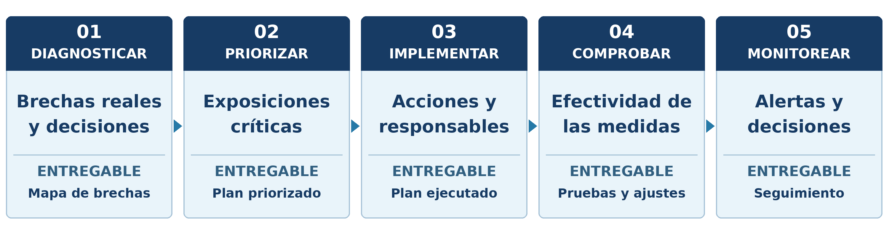

El 2 de noviembre de 2026, el Banco Central del Paraguay inició el procedimiento de resolución de ueno bank. Doce años antes, Banco Espírito Santo había sido sometido a resolución en Portugal, en un contexto de pérdidas significativas y operaciones cuestionadas por su supervisor.
Aunque las circunstancias, responsabilidades y conclusiones supervisoras son diferentes, ambos casos conducen a una misma pregunta:
¿No hemos aprendido la lección?
Durante más de una década, organismos internacionales y supervisores han documentado deficiencias de gobierno corporativo, conflictos de interés, información incompleta y controles inefectivos. Muchas de estas vulnerabilidades son conocidas; sin embargo, siguen apareciendo.
La verdadera brecha no está solamente en conocer las buenas prácticas, sino en aplicarlas cuando exigen cuestionar decisiones, limitar exposiciones o enfrentar intereses de negocio. Una organización puede contar con políticas, comités y funciones de control y, aun así, acumular riesgos capaces de comprometer su sostenibilidad.
Ueno bank: hechos documentados y límites del análisis
Con información disponible al 10 de noviembre de 2026, el Banco Central del Paraguay informó que el 2 de noviembre inició el procedimiento de resolución de ueno bank tras constatar un índice de solvencia inferior al 50 % del mínimo requerido como consecuencia de ajustes realizados durante el proceso de regularización [1].
FIX SCR rebajó la calificación de la entidad e indicó que la revisión supervisora había identificado operaciones con empresas vinculadas no reveladas oportunamente, debilidades en la calidad de los activos y deficiencias documentarias [2].
Posteriormente, la calificadora señaló que determinadas operaciones habrían sido registradas o contabilizadas de forma que impedían reflejar oportunamente el deterioro de solvencia informado por el regulador [2].
Los antecedentes disponibles permiten analizar riesgos relacionados con la información, las vinculaciones, la independencia y los controles, pero no permiten reconstruir de manera concluyente toda la secuencia de eventos ni atribuir responsabilidades definitivas.
La lección que parecía aprendida
La relevancia del caso ueno bank también reside en que invita a revisar vulnerabilidades observadas en crisis anteriores. Uno de los antecedentes más significativos fue Banco Espírito Santo (BES), sometido a resolución en Portugal en agosto de 2014.
En su decisión de resolución, el Banco de Portugal documentó pérdidas significativas, incumplimientos de instrucciones supervisoras y exposiciones dentro del Grupo Espírito Santo que no habían sido informadas oportunamente. BES resulta ilustrativo porque muestra cómo exposiciones intragrupo, decisiones de gestión e información insuficiente al supervisor pueden converger en una crisis patrimonial [3].
No corresponde equiparar ambos casos. El paralelismo es metodológico y se relaciona con vulnerabilidades que deben ser identificadas y controladas.
Una y otra vez aparecen problemas similares:
- Conflictos de interés insuficientemente gestionados.
- Deficiencias en la calidad e integridad de la información.
- Supervisión y cuestionamiento insuficientes.
- Controles incapaces de prevenir o corregir decisiones inadecuadas.
- Dificultades para identificar oportunamente exposiciones significativas.
Desde hace años existen recomendaciones del Financial Stability Board y del Comité de Basilea [4–6]. Sin embargo, la existencia de estándares no garantiza su aplicación efectiva.
Conocer las buenas prácticas no significa necesariamente aplicarlas cuando más se necesitan.
Cómo un problema de gobierno puede convertirse en un problema de solvencia
Aunque la solvencia se mide con indicadores financieros, las condiciones que contribuyen a su deterioro suelen originarse mucho antes.
Como ejemplo hipotético —no referido a ninguna de las entidades mencionadas—, imaginemos una organización con exposiciones a contrapartes aparentemente independientes cuyos vínculos económicos no han sido identificados adecuadamente. Las operaciones se evalúan de forma individual, los reportes subestiman la concentración agregada y las alertas no permiten comprender la magnitud real de la exposición.
La organización puede continuar operando hasta que la materialización de esos riesgos exija provisiones, ajustes patrimoniales o correcciones significativas.
Así, una deficiencia de gobierno, de información o de supervisión puede terminar convirtiéndose en un problema financiero.
Este mecanismo de propagación ilustra por qué una gestión de riesgos fragmentada o por silos puede permitir que vulnerabilidades no financieras se traduzcan en consecuencias patrimoniales.
Más allá del cumplimiento regulatorio
Cumplir las disposiciones regulatorias aplicables es indispensable, pero no garantiza por sí solo una gestión efectiva de todos los riesgos relevantes.
Los Principios Fundamentales de Basilea constituyen estándares de referencia para la supervisión bancaria y no se convierten automáticamente en obligaciones jurídicas para todas las entidades o jurisdicciones.
Sin embargo, las organizaciones —financieras y no financieras— pueden adoptar voluntariamente buenas prácticas internacionales pertinentes para su naturaleza, complejidad y perfil de riesgos. Su aplicación debería responder a la necesidad de proteger los objetivos estratégicos y la sostenibilidad, no exclusivamente a una exigencia regulatoria.
Para orientar sus decisiones, la alta dirección debería distinguir entre dos preguntas.
¿Qué exige el regulador? → Permite determinar las obligaciones que la organización debe cumplir.
¿Qué necesitamos hacer para proteger nuestros objetivos y nuestra sostenibilidad? → Amplía el análisis hacia los riesgos que, aun sin una exigencia normativa específica, podrían comprometer sus objetivos.
Las preguntas no son excluyentes: la primera establece el marco obligatorio; la segunda impulsa una gestión proporcional al perfil de riesgos y a los objetivos estratégicos. Limitarse a la primera puede dejar vulnerabilidades relevantes sin atender.
Cinco prácticas clave para fortalecer la gestión de riesgos
Las vulnerabilidades pueden estar presentes mucho antes de que aparezcan las pérdidas. Las siguientes cinco prácticas ofrecen orientaciones para reconocerlas y corregirlas.
1. Supervisión efectiva del directorio
El directorio debe supervisar las exposiciones relevantes, cuestionar decisiones cuando corresponda y asegurar el seguimiento de las acciones correctivas.
Aplicación práctica: identificar las decisiones que requieren revisión del directorio o sus comités y supervisar sistemáticamente el tratamiento de excepciones recurrentes.
2. Gestión real de conflictos de interés
Las declaraciones de intereses son solo un punto de partida. Se requiere identificar vinculaciones, asegurar independencia en las decisiones y controlar exposiciones agregadas.
Aplicación práctica: mantener registros actualizados, documentar abstenciones y establecer revisiones independientes para operaciones relevantes.
3. Evaluación integrada de riesgos
Las exposiciones pueden interactuar y amplificarse mutuamente. Riesgos de gobierno, cumplimiento, operaciones, tecnología y datos pueden potenciar sus efectos cuando no se analizan de manera integrada.
Aplicación práctica: analizar interdependencias, realizar escenarios de estrés y revisar exposiciones agregadas en instancias de decisión.
4. Validación periódica de los controles
La existencia de un control no demuestra que funcione.
Aplicación práctica: establecer pruebas periódicas, registrar hallazgos, asignar responsables y verificar que las medidas correctivas atiendan las causas identificadas o reduzcan sus efectos a niveles aceptables.
5. Información y alertas que impulsen decisiones
La calidad de los datos sigue siendo una condición indispensable para gestionar riesgos.
Aplicación práctica: definir indicadores, umbrales de escalamiento, responsables de respuesta y mecanismos de seguimiento. La utilidad de la información se mide por las decisiones y acciones que desencadena.
De las prácticas a la ejecución: propuesta metodológica de GR&P
Las cinco prácticas anteriores indican qué debe fortalecerse. Como propuesta de aplicación, GR&P plantea un ciclo de cinco etapas centrado en una pregunta transversal: ¿cómo se comprueba que el gobierno, la información y los controles influyen efectivamente en las decisiones sobre riesgos relevantes?

Modelo de aplicación propuesto por GR&P. Las etapas se adaptan al perfil de riesgos, gobierno y recursos de cada organización.
Diagnosticar. Examinar cómo funcionan realmente el gobierno, la identificación de exposiciones, los controles y el escalamiento. Revisar no solo políticas, sino también decisiones recientes, excepciones aprobadas, alertas no atendidas y evidencia de funcionamiento. Resultado: mapa de brechas y causas que afectan la toma de decisiones.
Priorizar. Valorar las brechas según impacto potencial, interdependencias, urgencia y capacidad de respuesta. Identificar las decisiones y exposiciones más sensibles y definir dónde intervenir primero. Resultado: plan de prioridades sustentado en criterios explícitos.
Implementar. Convertir las prioridades en cambios de atribuciones, procedimientos, controles y reportes. Asignar responsables, recursos, plazos y reglas de escalamiento para que las alertas produzcan acciones. Resultado: medidas implementadas con evidencia y responsables definidos.
Comprobar. Probar el diseño y funcionamiento de los controles y revisar si las medidas adoptadas han mejorado las decisiones o reducido exposiciones. Verificar el tratamiento de causas y las brechas residuales. Resultado: evaluación documentada de efectividad y acciones pendientes.
Monitorear. Definir indicadores y umbrales vinculados a decisiones, revisar alertas, excepciones y compromisos, y ajustar las medidas cuando cambie el perfil de riesgos. Resultado: tablero de seguimiento con trazabilidad entre señales, decisiones y acciones.
El aprendizaje que sigue pendiente
Los casos analizados recuerdan que muchas de las vulnerabilidades capaces de comprometer la sostenibilidad financiera no son nuevas. Han sido estudiadas durante años y existen múltiples estándares para gestionarlas.
El desafío sigue siendo convertir esas referencias en decisiones, controles y mecanismos de intervención efectivos.
El verdadero aprendizaje no consiste únicamente en conocer las buenas prácticas, consiste en aplicarlas cuando implican cuestionar decisiones, desafiar intereses o reconocer exposiciones incómodas.
Las condiciones que pueden desencadenar una crisis no siempre aparecen cuando se materializan las pérdidas. En ocasiones, se desarrollan mucho antes, cuando existen señales que no fueron identificadas, interpretadas o atendidas oportunamente.
Una buena práctica que no influye en las decisiones termina siendo solamente una declaración de intención.
En GR&P Consultores ayudamos a las organizaciones a cerrar la brecha entre conocer las buenas prácticas y aplicarlas efectivamente, fortaleciendo sus modelos de gestión de riesgos no financieros para que los controles, la información y los mecanismos de gobierno contribuyan a decisiones que protejan sus objetivos estratégicos y su sostenibilidad.
¿Sabe qué tan grande es la brecha entre las buenas prácticas de gestión de riesgos que su organización declara adoptar y las que realmente aplica al tomar decisiones? Conversemos.
Referencias
1. Banco Central del Paraguay (2026). Banco Central inicia el procedimiento de resolución de ueno bank. https://www.bcp.gov.py/web/institucional/w/banco-central-inicia-el-procedimiento-de-resolucion-de-ueno-bank
2. FIX SCR (2026). Hecho relevante: Ueno Bank S.A. (5 de noviembre), https://www.fixscr.com/reportes-web/view?id=60867; actualización (10 de noviembre), https://www.fixscr.com/reportes-web/view?id=60881
3. Banco de Portugal (2014). Deliberation of 3 August 2014 concerning Banco Espírito Santo, S.A. https://www.bportugal.pt/sites/default/files/deliberation_3_aug_2014_8pm.pdf
4. Financial Stability Board (2013). Thematic Review on Risk Governance. https://www.fsb.org/2013/02/r_130212/
5. Basel Committee on Banking Supervision (2015). Corporate Governance Principles for Banks. https://www.bis.org/bcbs/publ/d328.htm
6. Basel Committee on Banking Supervision (2024). Core Principles for Effective Banking Supervision. https://www.bis.org/bcbs/publ/d573.htm
7. Basel Committee on Banking Supervision (2013). Principles for Effective Risk Data Aggregation and Risk Reporting (BCBS 239). https://www.bis.org/publ/bcbs239.htm
8. COSO (2013). Internal Control—Integrated Framework. https://www.coso.org/